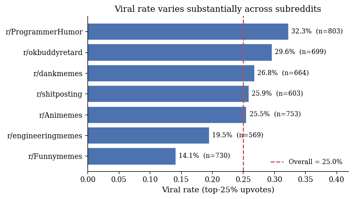
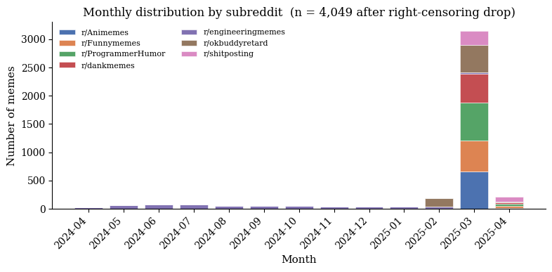
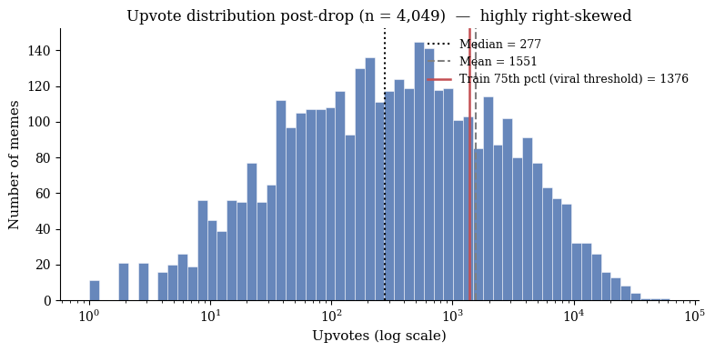
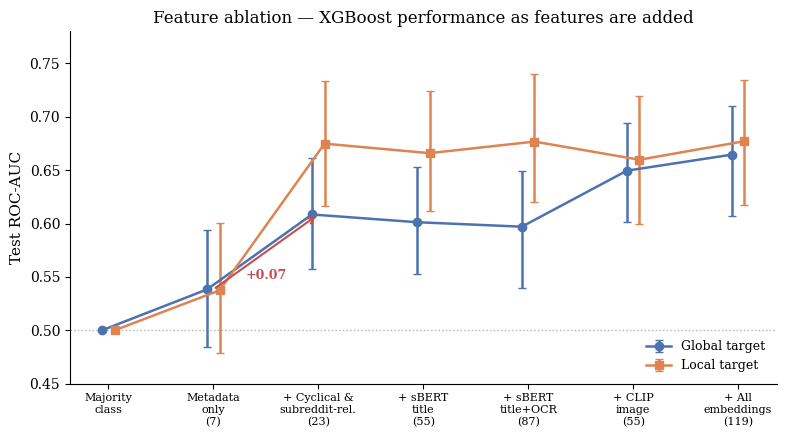
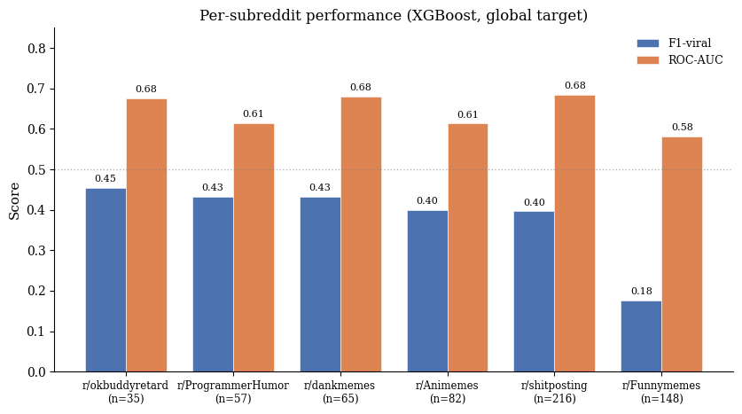
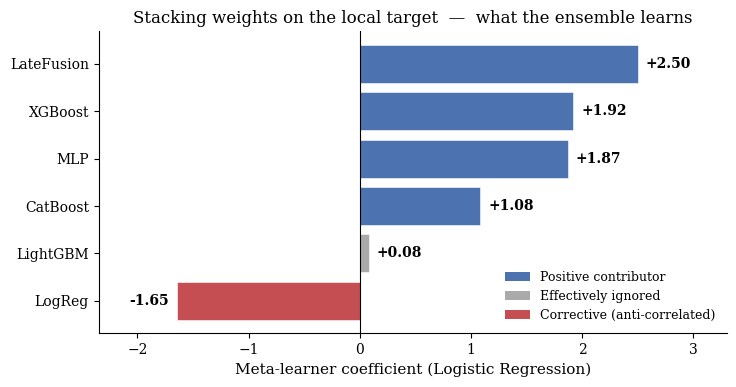

A multimodal machine learning approach to predicting Reddit meme virality using vision encoders, transformer language models, and ensemble methods.
We predict Reddit meme virality as a multimodal binary classification task: given a meme's image, title, OCR-extracted text, and post-time metadata, we predict whether it lands in the top 25% of upvotes. Using a temporally held-out test set of 608 posts across seven subreddits, we evaluate models ranging from a metadata-only baseline to a stacking ensemble of six learners over sBERT text and CLIP image embeddings. Our best model reaches ROC-AUC 0.776 on a per-subreddit virality target, a meaningful improvement over the 0.537 baseline. The largest single gain comes from subreddit-relative feature engineering rather than from any embedding modality, suggesting that community context, not just content, drives meme virality on Reddit.
Internet memes combine image, text, and audio to communicate an idea to its intended audience, usually some form of humor. The term originates from Dawkins (2006), who used "memes" to describe the spread of culture from mind to mind; researchers often use the two terms interchangeably despite the technical distinction between digitally edited content and the broader diffusion of sociocultural ideas (Adiga and K., 2024). Throughout this project, "meme" refers to Internet memes specifically. Berger's STEPPS framework (Marino, 2022) characterizes viral content as socially rewarding to share, environmentally triggered, emotionally evocative, easily understood, practically useful, and story-driven, dynamics that extend beyond the digital sphere, as seen in religious COVID-era memes spread on WhatsApp that reinforced lockdown compliance (Adiga and K., 2024). Prior work has explored virality through both content features and platform structure, but little of it has done so on Reddit, a heavily participatory platform whose subreddit structure makes audience explicit.
Research on memes seemed to gain more attention after the pandemic, specifically trying to determine whether memes as a form of media helped people cope during a long period of isolation (Myrick et al., 2022). Across the prior literature, memes have been explored using qualitative, quantitative, and mixed methods (Lande et al., 2026). One type of exploration done by Weng et al. (2014) focused on predicting virality through early spread patterns, exploring whether three features of the underlying network could predict virality of memes two months in advance. On the other hand, Ling et al. (2021) used machine learning to distinguish between memes that are likely to go viral and those that are not, successfully predicting over 80% of viral memes on Reddit and Twitter. Moving away from these quantitative approaches, Malodia et al. (2022) used interviews with stakeholders, including users, influencers, and brand managers, in an effort to determine the impact of viral memes in marketing. They found a significant relationship between content metrics such as relevance and whether memes were spread. As described above, there are various avenues to explore virality in memes, highlighting how further research is needed to understand all its components.
Researchers have started looking to Reddit to get new insights into what makes memes go viral (Sah and Jordan, 2025). With over 2.2 million subreddits as of 2025 (Curry, 2026), the platform organizes users into communities focused on specific, sometimes niche subjects. These groups are monitored by moderators who establish rules and guidelines, further building this sense of community. Interactions with posts are formed through a voting system where users can upvote a post, therefore pushing it to the top of the feed. This voting mechanism highlights Reddit's highly participatory nature. Prior research seems to heavily focus on a single domain rather than across subreddits. One example is Jo (2025), who studied subreddits such as r/PoliticalHumor and r/PoliticalMemes to understand political discussion. Overall, the literature does have interesting findings on specific spheres, but there is a lack of studies on how virality occurs broadly.
While prior research has found valuable insights on predicting virality through content, underlying network, and categorization, Reddit has been underexplored in relation to its unique features. To bridge this gap, our study uses memes from a wide variety of subreddits and explores correlations between the features and upvotes, specifically looking to see whether predictions differ across subreddits. We also explore whether a model solely using the textual components could compete against a more multimodal model.
We hypothesize that subreddit identity is a major driver of meme virality on Reddit, as some topics are more likely to have more or less controversy. Additionally, we expect that combining subreddit identity and multimodal meme content, including image or text embeddings, will predict top-25% upvote performance better than metadata alone, because subreddit context and content quality are jointly necessary for virality.
Subreddit as a stable categorical feature. We assume that subreddits are a stable and fixed category that will not be changed. Moreover, community norms and engagement behaviors remain relatively consistent over the collection period. If a subreddit's culture or moderation policy shifted significantly during this period, the relationship between subreddit identity and virality learned on the training set may not transfer to the test set.
Pre-publication features only. We assume that a useful virality predictor must rely only on information available at the moment of posting. Therefore, we exclude post-hoc engagement signals, number of comments and upvote ratio, from the feature set, despite their strong correlation with upvotes (r = 0.574 and r = 0.213 respectively). The Author karma is similarly treated with caution, as it was scraped at collection time rather than at post time and may include karma earned after the meme was published.
A dataset of 4,821 Reddit memes from seven subreddits, including r/Animemes, r/dankmemes, and r/ProgrammerHumor, is used in our project. These memes were created from April 21, 2024, to April 4, 2025. Twenty-one features are included for each meme, such as the author, upvotes, and text extracted from the image using Tesseract OCR. The dataset contains no missing values across all 21 columns. An example of a meme from this dataset is displayed in Figure 1.
Our EDA shows three main patterns that motivated the modeling design.
First, upvotes are highly right-skewed: the mean number of upvotes is 1,504.5, while the median is only 240 and the maximum reaches 62,256. Because a small number of extreme viral posts would dominate a regression objective, we frame the task as binary classification rather than predicting raw upvote counts (see Section 3.5 for the threshold definition).
Second, virality differs substantially across subreddits. For example, r/Funnymemes has the lowest viral rate at 14.1%, while r/ProgrammerHumor has the highest at 32.3%. This suggests that subreddit context matters, motivating subreddit-relative features and a local per-subreddit virality target.

Third, simple surface-level text features are weak predictors: title length has correlation r = −0.120 with upvotes, and OCR text length has correlation r = 0.019. Sentiment features also show near-zero correlations with log upvotes. In contrast, number of comments and upvote ratio are strongly correlated with upvotes, but they are post-publication engagement signals and are excluded from our feature set (see Section 2.2).
While examining the temporal distribution of the dataset, we found a significant imbalance in the posting dates. Figure 3 shows the monthly distribution of memes in the dataset. Furthermore, we decided that a random split may not be appropriate, since very similar posts from the same time period could appear in both the training and test sets. Instead, we decided to use a temporal split to better evaluate future generation in a setting more aligned with real-life prediction of viral memes.

With worries that recent posts might not have enough time to accumulate upvotes, we examine the percentage of viral posts (defined by the 75th percentile of all posts). Therefore, we drop posts less than 3 days old at scrape time, removing 772 posts. The final dataset contains 4,049 posts.
To evaluate our model in a way that reflects real-world deployment, we adopt a pure temporal split rather than a random shuffle. The full dataset is sorted chronologically by upload time and partitioned into 70% training, 15% validation, and 15% test, so that the model is trained only on memes posted before those in the validation and test sets. The split of data is in Table 1.
Table 1. Temporal Train-Validation-Test Split.
| Split | Number of Posts | Date Range | Viral Rate |
|---|---|---|---|
| Train | 2,834 | 2024-04-21 to 2025-03-27 | 0.267 |
| Validation | 607 | 2025-03-27 to 2025-03-30 | 0.264 |
| Test | 608 | 2025-03-30 to 2025-04-01 | 0.229 |
Because upvotes are highly right-skewed, we model virality as a binary classification task instead of predicting raw upvote counts. In the initial full-dataset EDA, the 75th percentile was 1,202 upvotes, corresponding to a 25% viral class. For final modeling, however, we recompute the threshold using only the training set after right-censoring removal and temporal splitting, giving a global viral threshold of 1,376 upvotes (Figure 4). This avoids using information from the validation and test periods when defining the target.
Since subreddit communities have different baseline engagement levels, we also define a local viral target using the 75th percentile within each subreddit, again based only on the training set. The global target measures overall Reddit-wide popularity, while the local target measures whether a meme performs unusually well within its own community.

We frame meme virality prediction as a binary classification task with the global and local targets defined in Section 3.5. All thresholds and subreddit-level statistics are computed using the training set only.
Each model takes a feature vector constructed from post-time metadata, engineered subreddit-relative features, and multimodal embeddings. The metadata features include subreddit category, time of day, day of week, title length, OCR text length, post hour, and account age. We further add cyclical encodings of hour and day, within-subreddit z-scores and percentile ranks, distance from the subreddit's peak posting hour, and subreddit-level baseline viral rate computed from the training set. For content representation, we use sBERT embeddings for the title and OCR text and CLIP ViT-B/32 embeddings for the image. Each embedding block is reduced to 32 dimensions using PCA fitted only on the training set. The final full feature vector has 119 dimensions.
The model outputs a viral probability p̂ ∈ [0, 1]. For classification metrics, we convert it to a binary prediction using threshold 0.5:
For the tree-based classifiers, the main objective is binary logistic loss with class re-weighting:
where y is the true label, p̂ is the predicted probability, and wy is the class weight. Since viral posts make up about one quarter of the training data, we use a larger weight for the viral class to reduce the effect of class imbalance. In the baseline setting, non-viral posts receive weight 1 and viral posts receive weight 3.
We compare seven models across four families (Table 2): a linear baseline, three gradient-boosted tree learners, two neural networks, and a stacking ensemble. The three boosting models share hyperparameters (max depth 4, learning rate 0.05) for fair comparison, and all models use class re-weighting to handle the 25% viral class imbalance.
The Late-Fusion Network (Figure 5) processes each modality through a dedicated tower and combines them via softmax gating that learns per-sample modality weights. The Stacking ensemble uses a Logistic Regression meta-learner trained on validation-set predictions, which can assign negative weights to base models whose errors are systematically anti-correlated with the target.
Table 2. Models compared in this study. All models are trained with class weighting and (where applicable) early stopping on the validation set.
| Family | Model | Key Configuration |
|---|---|---|
| Linear | Logistic Regression | ℓ2 (C = 0.5), class-balanced |
| Gradient-boosted trees | XGBoost | depth 4, lr 0.05, α = 0.1, λ = 1.0 |
| Gradient-boosted trees | LightGBM | depth 4, lr 0.05, 15 leaves |
| Gradient-boosted trees | CatBoost | depth 4, lr 0.05, L2 = 3.0 |
| Neural networks | MLP | 3 layers, 128 hidden, dropout 0.3 |
| Neural networks | Late-Fusion NN | 4 modality towers, softmax gating |
| Ensemble | Stacking | LR meta-learner over 6 base models |
We evaluate all models on a temporally held-out test set of 608 posts (March 30 to April 1, 2025), with model selection performed on a separate validation set of 607 posts. Because the viral class is imbalanced (approximately 25% of training posts), we report multiple complementary metrics. ROC-AUC is our primary metric, as it is threshold-independent and robust under class imbalance. We additionally report F1-viral to measure performance on the minority viral class, AUPRC to evaluate precision-recall tradeoffs, and accuracy as a reference against the majority-class baseline. To quantify uncertainty, we compute 95% confidence intervals via bootstrap resampling with 200 iterations on the test set. Finally, we break out per-subreddit F1-viral and ROC-AUC to check whether aggregate performance hides community-level differences.
Feature ablation. We first hold the model fixed (XGBoost) and vary the feature set (Table 3, Figure 6). Starting from a majority-class baseline (AUC 0.500), adding seven raw metadata features lifts global AUC to 0.537. Adding cyclical time encodings and subreddit-relative features (z-scores, percentile ranks, and per-community baseline viral rates) further raises global AUC to 0.609 and local AUC to 0.675. Layering on multimodal embeddings (sBERT for text, CLIP for images) brings global AUC to its peak at 0.665.

Table 3. Feature ablation: XGBoost performance across feature sets.
| Feature Set | # Feat. | Global Target | Local Target | ||
|---|---|---|---|---|---|
| AUC [95% CI] | F1-viral | AUC [95% CI] | F1-viral | ||
| Majority class | — | 0.500 | 0.000 | 0.500 | 0.000 |
| Metadata only | 7 | 0.537 [0.485, 0.594] | 0.324 | 0.537 [0.479, 0.601] | 0.217 |
| + Cyclical & subreddit-relative | 23 | 0.609 [0.557, 0.661] | 0.369 | 0.675 [0.616, 0.734] | 0.325 |
| + sBERT title | 55 | 0.601 [0.553, 0.653] | 0.356 | 0.666 [0.612, 0.724] | 0.300 |
| + sBERT title & OCR | 87 | 0.597 [0.540, 0.650] | 0.372 | 0.677 [0.620, 0.740] | 0.290 |
| + CLIP image | 55 | 0.650 [0.602, 0.695] | 0.393 | 0.660 [0.600, 0.720] | 0.324 |
| + All embeddings (full) | 119 | 0.665 [0.607, 0.710] | 0.392 | 0.677 [0.618, 0.734] | 0.266 |
All rows use XGBoost with class re-weighting and early stopping on the validation set; only the feature set varies. ROC-AUC reported with 95% bootstrap confidence intervals (200 iterations) on the test set (n = 608). Best result per target shown in bold.
Model comparison. We then hold the feature set fixed (full 119-dim multimodal) and vary the model family (Table 4). On the global target, CatBoost achieves the best single-model performance (AUC 0.671), narrowly edging out XGBoost and a Stacking ensemble. On the local target the picture changes: Stacking reaches AUC 0.776, our best result overall, suggesting that base learners capture complementary patterns when class imbalance is normalized within each subreddit. Logistic Regression underperforms on the local target (AUC 0.464), indicating that local virality requires non-linear interactions between modalities.
Table 4. Model comparison on the full multimodal feature set.
| Model | Global Target | Local Target | ||
|---|---|---|---|---|
| AUC [95% CI] | F1-viral | AUC [95% CI] | F1-viral | |
| Logistic Regression | 0.611 [0.562, 0.670] | 0.408 | 0.464 [0.409, 0.515] | 0.252 |
| LightGBM | 0.603 [0.555, 0.651] | 0.000 | 0.562 [0.501, 0.622] | 0.000 |
| MLP | 0.591 [0.537, 0.636] | 0.383 | 0.664 [0.608, 0.719] | 0.330 |
| XGBoost | 0.665 [0.607, 0.710] | 0.392 | 0.677 [0.618, 0.734] | 0.266 |
| Late-Fusion NN | 0.630 [0.582, 0.677] | 0.399 | 0.732 [0.678, 0.781] | 0.355 |
| CatBoost | 0.671 [0.619, 0.713] | 0.432 | 0.682 [0.615, 0.740] | 0.364 |
| Stacking | 0.662 [0.604, 0.710] | 0.403 | 0.776 [0.730, 0.817] | 0.425 |
All models use the same 119-dimensional feature set (7 metadata + 16 engineered + 96 PCA-reduced multimodal embeddings). ROC-AUC reported with 95% bootstrap confidence intervals (200 iterations) on the test set (n = 608). Best result per target shown in bold.
Grouping XGBoost's gain-based feature importances by modality (Table 5) shows that the three content embedding blocks together account for ~81% of total importance, with CLIP image consistently the strongest at ~29%. Subreddit-relative features account for only ~9% but were the single largest contributor to AUC gains in our progression (Table 3, +0.07 global AUC), suggesting they re-express existing values rather than add new information. Cyclical time (3.5%) and title–OCR cosine similarity (0.7%) sit near the noise floor, supporting the view that posting time is at best a secondary signal and that title–image semantic alignment does not predict virality.
Table 5. Feature importance share by modality.
| Modality | Global Target | Local Target |
|---|---|---|
| CLIP image (PCA-32) | 28.8% | 29.6% |
| sBERT OCR (PCA-32) | 26.5% | 26.3% |
| sBERT title (PCA-32) | 26.1% | 26.6% |
| Subreddit-relative (M2) | 9.4% | 7.5% |
| Raw metadata (M1) | 5.0% | 5.6% |
| Cyclical time (M1+) | 3.5% | 3.8% |
| Title–OCR cosine similarity | 0.7% | 0.7% |
Gain-based feature importance from the full multimodal XGBoost, summed within each modality block and normalized to 100%.

Figure 7 is the per-subreddit breakdown, that reveals substantial variation hidden by aggregate metrics. F1-viral ranges from 0.176 (r/Funnymemes) to 0.455 (r/okbuddyretard), while ROC-AUC ranges from 0.582 to 0.685. The most notable pattern is r/shitposting (n = 216), which shows a clear divergence between the two metrics, strong ranking performance (AUC 0.685) but only moderate threshold-based classification (F1 0.396). We discuss the drivers of this variation in Section 6.5.
Our results support the hypothesis that subreddit identity combined with multimodal content predicts virality better than metadata alone. Performance went from 0.538 ROC-AUC on metadata to 0.776 on the per-subreddit target with stacking, with non-overlapping bootstrap intervals. The more interesting result is how we got there. Subreddit-relative features (z-scores, percentile ranks, baseline viral rates) added +0.07 global AUC and +0.14 local AUC, which is more than the joint contribution of all three embedding modalities (+0.06).
The biggest single lift came from feature engineering, not embeddings. We read this as evidence that on Reddit, virality is gated by community norms before it is gated by content quality. A 40-character title is short for r/ProgrammerHumor and long for r/shitposting. A 200-upvote post is exceptional in r/engineeringmemes and unremarkable in r/Funnymemes. A model that treats these on a single global scale will misread half of them, so re-expressing each post relative to its own community recovers signal that absolute features hide. This fits Berger's STEPPS framing of "social currency" as something inherently local to an audience.
The Stacking ensemble's meta-learner weights illuminate why the model gains so much on the local target. The Late-Fusion network receives the highest positive weight (+2.50), reflecting its strong standalone performance (AUC 0.732). XGBoost (+1.92) and MLP (+1.87) follow, with CatBoost contributing more modestly (+1.08).

Two weights stand out. Logistic Regression receives a substantial negative weight (−1.65), even though it is a base learner that the ensemble was supposed to combine. Its single-model local AUC (0.464) is below chance, meaning its predictions are systematically anti-correlated with the truth, so the meta-learner repurposes it as a corrective signal rather than a positive contributor. LightGBM, which produces no positive predictions at threshold 0.5 (F1 = 0.000), receives a near-zero weight (+0.08) and is effectively ignored.
This is the kind of behavior stacking is designed for: rather than averaging six imperfect predictors, the meta-learner identifies which base models are reliable, which are reliably wrong, and which can be discarded. The result is a 0.776 local AUC, our best test-set performance and a meaningful jump over the strongest individual base learner (Late-Fusion at 0.732).
The three embedding blocks account for 81% of XGBoost's gain importance, but gain scales with feature count: our 96 PCA dimensions absorb more split mass than 16 engineered features even when their predictive value is similar.
Two factors organize the per-subreddit results (Figure 7): class balance and visual coherence. r/Funnymemes has the lowest training viral rate (14.1%) and the lowest test F1 (0.176); with few positives and no consistent visual identity, the model defaults to the majority class. r/okbuddyretard and r/dankmemes have distinctive templates that give CLIP cleaner boundaries, lifting both above 0.43 F1.
r/shitposting is the most interesting case: high AUC (0.685) but moderate F1 (0.396). The model ranks posts well but cannot find a single global threshold that fits its bimodal upvote distribution. This is exactly the failure mode the local target is designed to address, and stacking on the local target reaches 0.776 AUC. We note that r/shitposting entered our dataset later than other communities (training data starting 2025-03-26), giving the model a shorter window to learn its conventions, though strong ranking performance suggests this did not prevent the model from capturing the relative ordering of posts.
Our test window covers only the final two to three days of collection, so we evaluate generalization to the immediate future rather than to longer-term shifts in meme culture; rolling-window evaluation is a natural extension. The seven subreddits we cover are diverse in tone and style but do not span the full breadth of Reddit, and generalization to non-English communities or text-first formats would need new data. Temporal coverage is also uneven across subreddits, with only r/engineeringmemes spanning a full year, which we mitigated through a temporal split that respects each community's available history. Finally, we deliberately excluded post-publication signals like comment count and upvote ratio to keep the prediction setting deployment-faithful, so our numbers should be read as a lower bound on what richer post-time author features could achieve.
Our dataset spans only seven subreddits over a single year, with most posts concentrated in March 2025; expanding to a broader range of communities and a longer collection window would test whether our findings generalize. Incorporating real-time context such as trending events, popular meme templates, or recent subreddit activity could also capture the bursty nature of viral content that static features miss.